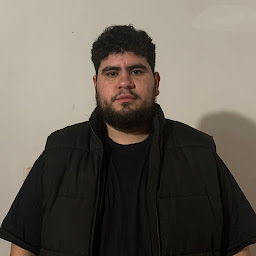
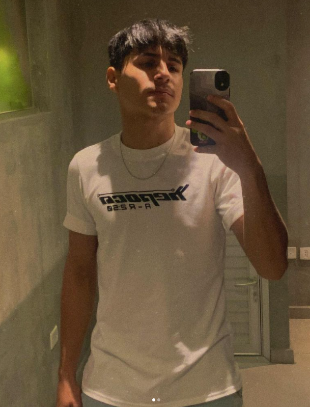

Raul Marin - Desarrollador Especialista en desarrollo web y aplicaciones empresariales. Con experiencia en tecnologías backend y frontend, Raul se encarga de implementar soluciones completas para los proyectos de la empresa.
Romina Enciso - Desarrolladora Desarrolladora con enfoque en el diseño de interfaces de usuario y experiencia de usuario (UI/UX). Romina es responsable de crear interfaces intuitivas y estéticas que mejoren la interacción del usuario.

Hector Caceres - Analista Analista de sistemas, encargado de la recolección y análisis de datos para optimizar procesos. Héctor trabaja en la mejora continua y el análisis de eficiencia en los sistemas.
Esteban Peralta - Analista Analista orientado a la gestión de datos y a la optimización de procesos internos. Esteban colabora estrechamente con el equipo de desarrollo para mejorar la calidad de los datos en los sistemas.
Marcos Ortiz - Soporte Encargado de soporte técnico, Marcos es responsable de la atención a usuarios y la resolución de incidencias técnicas, garantizando un funcionamiento óptimo de los sistemas y el soporte continuo.